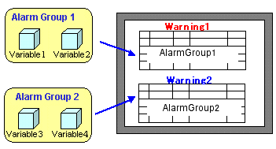
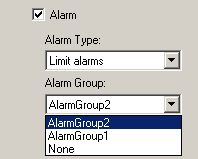
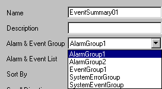

An alarm group and event group is a collection of alarms and events. When you enable the alarm property of the variable, associate it with the appropriate group. In the summary, select a group to display all the alarms and events associated with that group.
Right-click the Alarms and Events node and select the group you want to create.
You can add up to 32 groups in a single target.
Right-click the alarm group and select Settings to display the Alarm Group Settings dialog box, or left-click the event group to display the Event Group Settings window.
Define the group settings. See Section 16.2.4, Group Settings.

In the New Variable or Variable Properties dialog box, create the variable and select an alarm group in the Alarm Group property.

Create a summary on a panel. In the settings for the summary, select the group in the Alarm and Event Group property.
